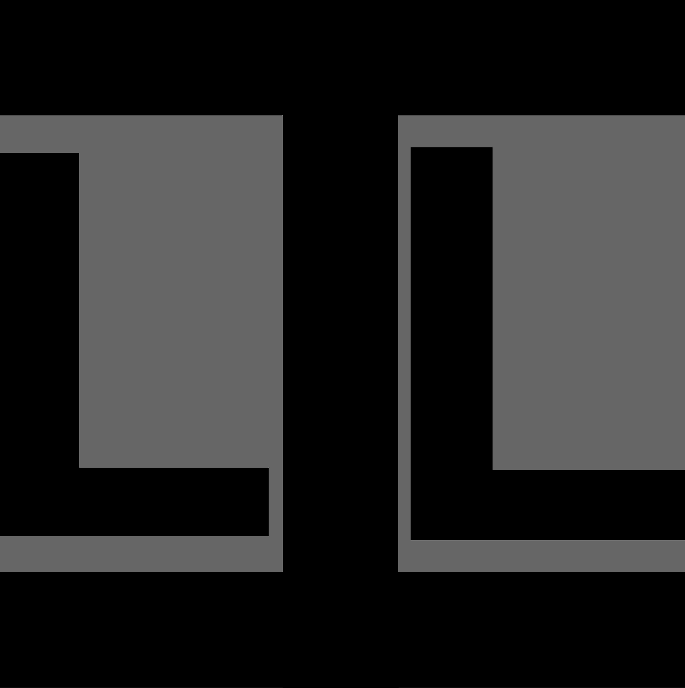

The TPTP Language

A Key to Success
- Human-readable, machine-parsable, flexible, extensible
- Same language for input (problems) and output (derivations, models)
Inter-operability between systems and tools
- Hierarchy of Languages
- CNF and FOF - stable and defacto standards
- TF0, TX0, and TH0 - stable and being used, with arithmetic
- NX0 and NH0 - just released
- TF1, TX1, and TH1 - stable, but not much use yet
- NX1 and NH1 unclear
Annotated Formulae
Language Definition in BNF
- Extended BNF
- Syntax rules:
<fof_binary_assoc> ::= <fof_or_formula> | <fof_and_formula>
- Semantic rules:
<source> :== <dag_source> | <internal_source>
- Token rules:
<lower_word> ::- <lower_alpha><alpha_numeric>*
- Character macros:
<lower_alpha> ::: [a-z]
- LR1 - lex/yacc/flex/bison friendly
- Hyperlinked online